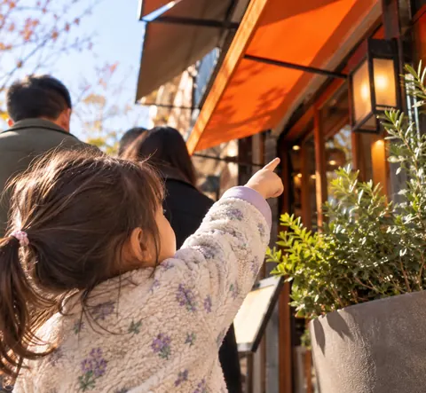

Maps aren't available right now, so you can check the weather by city.
Google Maps
Choose a place on the Explore tab to see its weather.
Google walking estimates may not reflect the time needed when accompanying young children. Check crossings and the route before visiting.
All searches six kinds of places, so it takes a little longer.